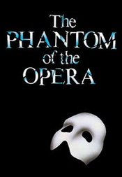

歌剧魅影
内容简介：
- 《歌剧魅影》（英语：The Phantom of the Opera），又译《歌声魅影》、《剧院魅影》，是一部知名的音乐剧，由安德鲁·劳埃德·韦伯作曲，剧本根据法国侦探小说家加斯东·勒鲁所撰著的爱情惊悚小说《歌剧魅影》改编。音乐剧的歌词和对白由Richard Stilgoe创作。1986年在伦敦西区首演，1988年登陆百老汇，并于1988年获得七项托尼奖，是史上最成功的音乐剧之一。另外，于2004年，这部音乐剧被搬上银幕。
- 《歌剧魅影》可以说是一部折射着后现代魅力的剧作，首先它成功的改编了加斯东·勒鲁（Gaston Leroux）的原作小说，去除了原作后半段配角抢戏的松散结构，而完整保留原作的歌德小说悬疑阴森风格，并使之更适合舞台演出，提升了作品的可看性，其次，巧妙的戏中戏令观众徘徊于现实与虚幻之间。尤其是追逐魅影的那一场戏，整个剧院，台上台下、四面八方响起了魅影的声音，使观众置身其中，因为那句“我在这里”似乎就在他们的身边，就在隔壁的包厢，而那幕吊灯突然坠落的戏也着实令气氛紧张刺激到极点，前排观众的惊叫与台上演员的呼声连成一片，在这方面，舞台设计玛莉亚·布琼森自然功不可没。